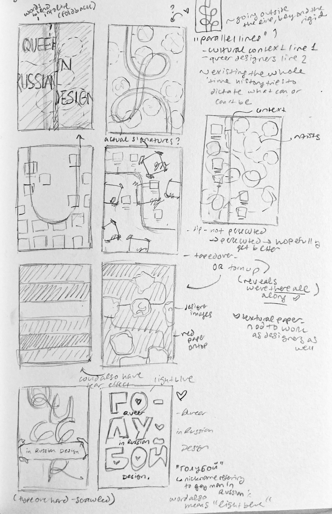
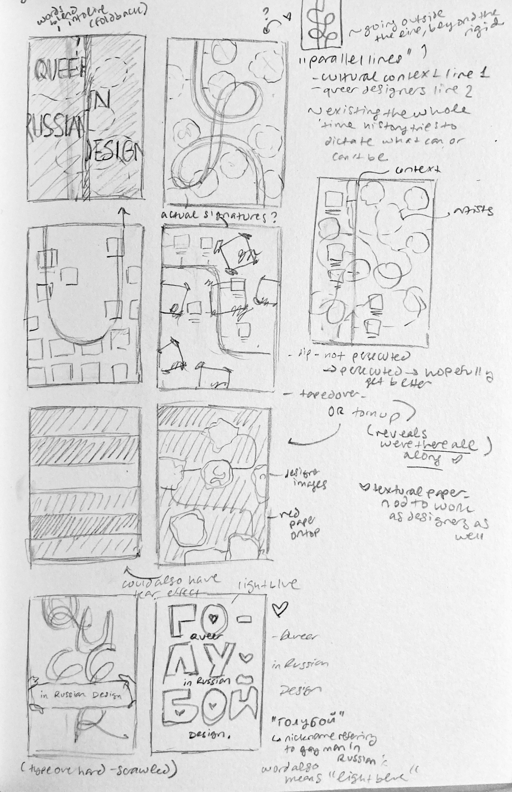

Alt: Queer
Russian Design
Home
Back
Next
In deciding who —
and what works —
to represent on an informational poster about design history, I thought about the history of the Russian LGBTQ+ community in a country that hasn't always accepted their presence. Work produced by or about the community demonstrates their presence and their voices despite and in response to a turbulent socio-political history that makes visibility difficult.
The motion poster speaks to this invisibility, the letters needed to complete the title appearing and disappearing. The title itself —
"goluboy" —
references Russian slang for the community, also meaning "light blue".

 

© Sasha Kostenko 2022. Created by Sasha Kostenko. sasha.kostenko@wustl.edu